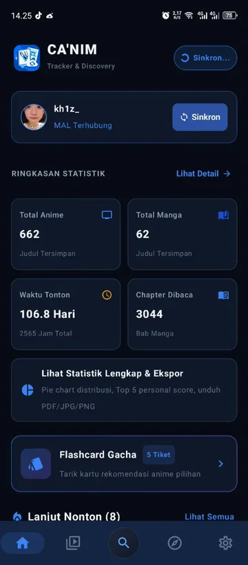

Tracking anime tanpa bloatware.
Sinkron langsung ke MyAnimeList.
Hanya 2.36 MB. Arsitektur Dual-Engine (MAL + AniList GraphQL) & Jetpack Compose M3. Zero-Network Cold Start dengan Happy Eyeballs RFC 8305. 100% bebas iklan dan 65 automated tests.

Dirancang Khusus untuk Penggemar Anime & Manga
Kebebasan mengelola daftar tontonan tanpa batasan kuota, tanpa iklan interupsi, dan tanpa pelacakan data komersial.
Dual-Engine Sync & Fast Failover
MAL SSOT • AniList GraphQL • Happy EyeballsSinergi dua mesin tanpa duplikasi database Room lokal: MyAnimeList sebagai Single Source of Truth untuk status tracking, skor, dan riwayat; AniList GraphQL untuk metadata kaya, poster HD, dan database studio. Didukung fast fallback (RFC 8305 IPv4/IPv6 racing) dan batas waktu agresif 6s/8s untuk transisi mulus saat jaringan ISP tersendat.
Zero-Network Cold Start & SWR
SWR 30-Min • Disk LRU < 10ms • HTTP 30MBStale-While-Revalidate (SWR) Library Cache mengeliminasi jeda cold start pada saat membuka aplikasi. Dilengkapi Disk-backed LRU Cache (< 10 ms), Multi-Key In-Memory LRU (0 ms), deduplikasi request bersamaan (ConcurrentHashMap), dan pemutakhiran bertahap (incremental diff-only metadata enrichment).
Popout Detail & Fluid Continuity
Spring ScaleIn 0.88f • Scroll Memory MapTransisi modal detail fullscreen berbasis pegas fisika halus (scaleIn 0.88f + fadeIn 220ms) tanpa loncatan glitch pojok layar. Fitur detailScrollPositions secara presisi mengingat posisi dan offset scroll saat bolak-balik melihat relasi anime (prequel, sequel, spin-off). Bilah navigasi dan selektor ditenagai SmoothSegmentedSelector.
Flashcard Gacha Berkeadilan
Pembalikan 100% Gratis • 5 Tiket/MingguEksplorasi anime acak bergaya tumpukan kartu UNO dengan swipe fisika pegas. Pembalikan kartu untuk melihat sinopsis & rekomendasi 100% bebas biaya tiket (kuota hanya berkurang saat disimpan atau dibuang). Dilengkapi baseline tracking anti-exploit kuota dan floor minimum 5 tiket setiap Senin.
Direktori 35+ Studio & TBA
35+ Studio Legendaris • 30-Day CacheEnsiklopedia mendalam studio anime Jepang (ufotable, MAPPA, KyoAni, Bones, Doga Kobo, dll.) dengan data faktual tahun berdiri, negara, total rilisan, dan tautan resmi. Dilengkapi live search studio dan pengelompokan tahun rilis dinamis yang menempatkan judul TBA (akan datang) di posisi teratas.
Ekspor Multi-Rasio & FOSS
Rasio 9:16 & 16:9 • AES-256 GCM • ~2.3 MBHasilkan infografis statistik tontonan siap bagi dalam rasio 9:16 Story atau 16:9 Landscape dengan pie chart genre dan penyaring AnimeFranchiseFilter. Kredensial akun terlindungi di Android KeyStore AES256-GCM. 100% bebas iklan seumur hidup di bawah lisensi GNU GPL-3.0 dengan ukuran APK ramping ~2.3 MB.
Arsitektur & Benchmark Komparatif
Dioptimalkan mengadopsi standar performa ArchiveTune. Nol alokasi berlebih pada Garbage Collector dan rendering mulus 60/120 FPS.
R8 Full-Shrinking ProGuard
Zero-Network SWR Cache
Coil RGB_565 Decoding (-50%)
Instant synthesis + Disk cache
Arsitektur Sinkronisasi Dual-Engine (RFC 8305)
Happy Eyeballs balapan rute IPv4/IPv6 mengeliminasi delay 250ms+ saat jaringan seluler/ISP lambat.
Batas koneksi 6 detik & baca 8 detik seketika beralih ke fallback MAL jika AniList terhambat.
Decoding Coil RGB_565 memangkas 50% konsumsi RAM bitmap dan meniadakan freeze Garbage Collection.
terminal
Perbandingan Head-to-Head
CA'NIM
vs Tracker Biasa
Tabel
diferensiasi performa, privasi, dan stabilitas
[+] Buka
expand_more
Perbandingan Head-to-Head
CA'NIM vs Tracker BiasaFilosofi Logo & Estetika Cyber-Blue Radiant
Karya seni master beresolusi tinggi (1254 × 1254 px) yang memadukan kultur visual manga Jepang, teknologi cloud modern, dan tema Cyber Dark Native.
Buku Manga & Mata Anime
Buku bersampul biru elektrik dengan detail halaman bertingkat dan pita pembatas cyan. Menampilkan mata karakter anime beriris biru safir dengan pantulan cahaya ganda melambangkan katalog hidup.
Panel Manga & Siluet Torii
Kartu panel berbingkai putih di sudut kanan atas menampilkan awan langit, balon percakapan, dan siluet gerbang Torii tradisional, menegaskan identitas kultur manga Jepang.
Lencana Sinkronisasi Awan
Awan putih kontras di sudut kanan bawah dengan dua panah melingkar melambangkan integrasi Single Source of Truth langsung ke server MyAnimeList secara instan dan dua arah.
Radiant Cyber-Blue & Kilau
Gradasi biru elektrik dengan pancaran cahaya dinamis dan kilau bintang memberikan nuansa futuristik, cepat, dan selaras dengan tema gelap (Cyber Dark Native) aplikasi.
Tangkapan Layar Langsung CA'NIM
Simulasi antarmuka Jetpack Compose Material 3 di layar smartphone modern.
canim-universal-release-v6.1.5.apk
Kompilasi universal otomatis GitHub Actions CI/CD dan lolos verifikasi 65 automated unit tests.
Pilar Teknologi
Dibangun dengan arsitektur Dual-Engine MVVM + StateFlow reaktif, OkHttp Happy Eyeballs RFC 8305, Coil RGB_565 image loading, dan Gson R8 ProGuard hardened.
Mulai lacak animemu sekarang.
Tanpa pengumpulan data pribadi, hemat daya baterai dengan arsitektur native, dan sinkron otomatis dengan akun MyAnimeList milikmu.